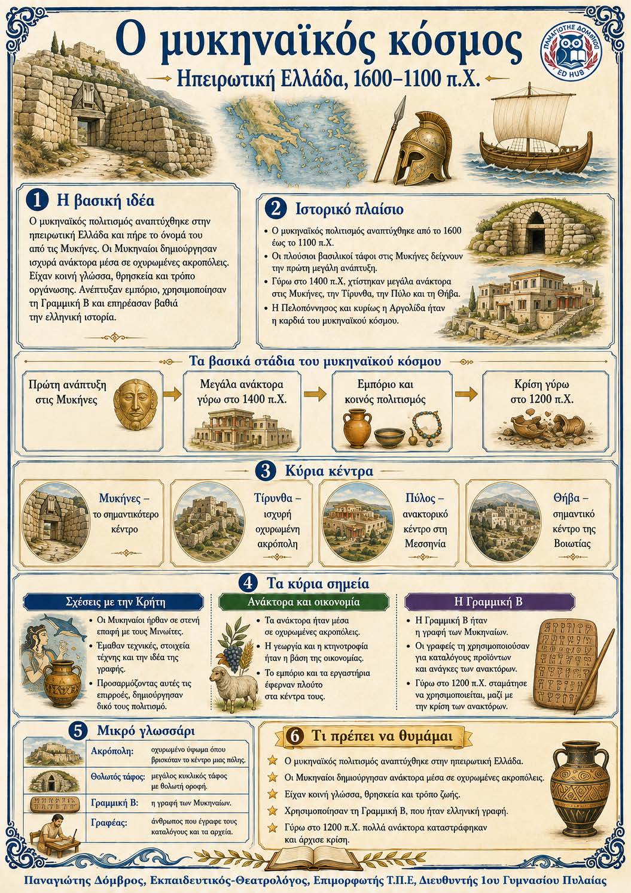

Πληροφοριογράφημα ενότητας
Το πληροφοριογράφημα αυτής της ενότητας δεν έχει ανέβει ακόμη. Οι σημειώσεις παραμένουν πλήρως διαθέσιμες.

Κεφάλαιο Β΄ · Ηπειρωτική Ελλάδα, 1600-1100 π.Χ.
Ο μυκηναϊκός πολιτισμός ήταν ο πρώτος μεγάλος ελληνικός πολιτισμός. Αναπτύχθηκε γύρω από ισχυρά ανάκτορα στην ηπειρωτική Ελλάδα. Οι Μυκηναίοι πήραν πολλά στοιχεία από τους Μινωίτες, αλλά τα άλλαξαν σύμφωνα με τις δικές τους ανάγκες. Η Γραμμική Β δείχνει ότι μιλούσαν ελληνικά. Το εμπόριο και τα θαλάσσια ταξίδια τους έφεραν μεγάλη δύναμη.
